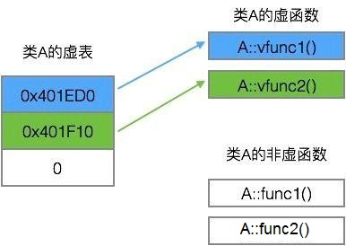
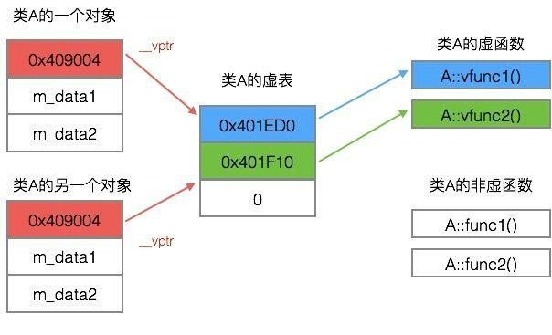

C++ 虚函数表剖析
CPP语言编程 2019-08-09 17:48:12
一、概述
为了实现C++的多态，C++使用了一种动态绑定的技术。这个技术的核心是虚函数表（下文简称虚表）。本文介绍虚函数表是如何实现动态绑定的。
二、类的虚表
每个包含了虚函数的类都包含一个虚表。
我们知道，当一个类（A）继承另一个类（B）时，类A会继承类B的函数的调用权。所以如果一个基类包含了虚函数，那么其继承类也可调用这些虚函数，换句话说，一个类继承了包含虚函数的基类，那么这个类也拥有自己的虚表。
我们来看以下的代码。类A包含虚函数vfunc1，vfunc2，由于类A包含虚函数，故类A拥有一个虚表。
class A {
public:
virtual void vfunc1();
virtual void vfunc2();
void func1();
void func2();
private:
int m_data1, m_data2;
};
类A的虚表如下图所示。

虚表是一个指针数组，其元素是虚函数的指针，每个元素对应一个虚函数的函数指针。需要指出的是，普通的函数即非虚函数，其调用并不需要经过虚表，所以虚表的元素并不包括普通函数的函数指针。
虚表内的条目，即虚函数指针的赋值发生在编译器的编译阶段，也就是说在代码的编译阶段，虚表就可以构造出来了。
三、虚表指针
虚表是属于类的，而不是属于某个具体的对象，一个类只需要一个虚表即可。同一个类的所有对象都使用同一个虚表。
为了指定对象的虚表，对象内部包含一个虚表的指针，来指向自己所使用的虚表。为了让每个包含虚表的类的对象都拥有一个虚表指针，编译器在类中添加了一个指针，*__vptr，用来指向虚表。这样，当类的对象在创建时便拥有了这个指针，且这个指针的值会自动被设置为指向类的虚表。

上面指出，一个继承类的基类如果包含虚函数，那个这个继承类也有拥有自己的虚表，故这个继承类的对象也包含一个虚表指针，用来指向它的虚表。
四、动态绑定
说到这里，大家一定会好奇C++是如何利用虚表和虚表指针来实现动态绑定的。我们先看下面的代码。
class A {
public:
virtual void vfunc1();
virtual void vfunc2();
void func1();
void func2();
private:
int m_data1, m_data2;
};
class B : public A {
public:
virtual void vfunc1();
void func1();
private:
int m_data3;
};
class C: public B {
public:
virtual void vfunc2();
void func2();
private:
int m_data1, m_data4;
};
类A是基类，类B继承类A，类C又继承类B。类A，类B，类C，其对象模型如下图所示。

由于这三个类都有虚函数，故编译器为每个类都创建了一个虚表，即类A的虚表（A vtbl），类B的虚表（B vtbl），类C的虚表（C vtbl）。类A，类B，类C的对象都拥有一个虚表指针，*__vptr，用来指向自己所属类的虚表。
类A包括两个虚函数，故A vtbl包含两个指针，分别指向A::vfunc1()和A::vfunc2()。
类B继承于类A，故类B可以调用类A的函数，但由于类B重写了B::vfunc1()函数，故B vtbl的两个指针分别指向B::vfunc1()和A::vfunc2()。
类C继承于类B，故类C可以调用类B的函数，但由于类C重写了C::vfunc2()函数，故C vtbl的两个指针分别指向B::vfunc1()（指向继承的最近的一个类的函数）和C::vfunc2()。
虽然上图看起来有点复杂，但是只要抓住“对象的虚表指针用来指向自己所属类的虚表，虚表中的指针会指向其继承的最近的一个类的虚函数”这个特点，便可以快速将这几个类的对象模型在自己的脑海中描绘出来。
非虚函数的调用不用经过虚表，故不需要虚表中的指针指向这些函数。
假设我们定义一个类B的对象bObject。由于bObject是类B的一个对象，故bObject包含一个虚表指针，指向类B的虚表。
int main()
{
B bObject;
}
现在，我们声明一个类A的指针p来指向对象bObject。虽然p是基类的指针只能指向基类的部分，但是虚表指针亦属于基类部分，所以p可以访问到对象bObject的虚表指针。bObject的虚表指针指向类B的虚表，所以p可以访问到B vtbl。如图3所示。
int main()
{
B bObject;
A *p = & bObject;
}
当我们使用p来调用vfunc1()函数时，会发生什么现象？
int main()
{
B bObject;
A *p = & bObject;
p->vfunc1();
}
程序在执行p->vfunc1()时，会发现p是个指针，且调用的函数是虚函数，接下来便会进行以下的步骤。
首先，根据虚表指针p->__vptr来访问对象bObject对应的虚表。虽然指针p是基类A*类型，但是*__vptr也是基类的一部分，所以可以通过p->__vptr可以访问到对象对应的虚表。
然后，在虚表中查找所调用的函数对应的条目。由于虚表在编译阶段就可以构造出来了，所以可以根据所调用的函数定位到虚表中的对应条目。对于p->vfunc1()的调用，B vtbl的第一项即是vfunc1对应的条目。
最后，根据虚表中找到的函数指针，调用函数。从图3可以看到，B vtbl的第一项指向B::vfunc1()，所以p->vfunc1()实质会调用B::vfunc1()函数。
如果p指向类A的对象，情况又是怎么样？
int main()
{
A aObject;
A *p = &aObject;
p->vfunc1();
}
当aObject在创建时，它的虚表指针__vptr已设置为指向A vtbl，这样p->__vptr就指向A vtbl。vfunc1在A vtbl对应在条目指向了A::vfunc1()函数，所以p->vfunc1()实质会调用A::vfunc1()函数。
可以把以上三个调用函数的步骤用以下表达式来表示：
(*(p->__vptr)[n])(p)
可以看到，通过使用这些虚函数表，即使使用的是基类的指针来调用函数，也可以达到正确调用运行中实际对象的虚函数。
我们把经过虚表调用虚函数的过程称为动态绑定，其表现出来的现象称为运行时多态。动态绑定区别于传统的函数调用，传统的函数调用我们称之为静态绑定，即函数的调用在编译阶段就可以确定下来了。
那么，什么时候会执行函数的动态绑定？这需要符合以下三个条件。
- 通过指针来调用函数指针upcast向上转型（继承类向基类的转换称为upcast，关于什么是upcast，可以参考本文的参考资料）调用的是虚函数
如果一个函数调用符合以上三个条件，编译器就会把该函数调用编译成动态绑定，其函数的调用过程走的是上述通过虚表的机制。
五、总结
封装，继承，多态是面向对象设计的三个特征，而多态可以说是面向对象设计的关键。C++通过虚函数表，实现了虚函数与对象的动态绑定，从而构建了C++面向对象程序设计的基石。
参考资料
- 《C++ Primer》第三版，中文版，潘爱民等译http://www.learncpp.com/cpp-tutorial/125-the-virtual-table/侯捷《C++最佳编程实践》视频，极客班，2015Upcasting and Downcasting, http://www.bogotobogo.com/cplusplus/upcasting_downcasting.php
附录
示例代码
https://github.com/haozlee/vtable/blob/master/main.cpp
#include <iostream>
using namespace std;
class A {
public:
A() : m_data1(0), m_data2(0) {}
virtual void vfunc1() { cout << "A::vfunc1" << endl; };
virtual void vfunc2() { cout << "A::vfunc2" << endl; };
void func1() { cout << "A::func1" << endl; };
void func2() { cout << "A::func2" << endl; };
private:
int m_data1, m_data2;
};
class B : public A {
public:
B() : A(), m_data3(0) {}
virtual void vfunc1() { cout << "B::vfunc1" << endl; };
void func1() { cout << "B::func1" << endl; };
private:
int m_data3;
};
class C: public B {
public:
C() : B(), m_data1(0), m_data4(0) {}
virtual void vfunc2() { cout << "C::vfunc2" << endl; };
void func2() { cout << "C::func2" << endl; };
private:
int m_data1, m_data4;
};
int main()
{
B bObject;
A *p = &bObject;
p->vfunc1();
A aObject = (A)bObject;
aObject.vfunc1();
C cObject;
p = &cObject;
p->vfunc1();
p->vfunc2();
cObject.A::func1();
system("pause");
return 0;
}